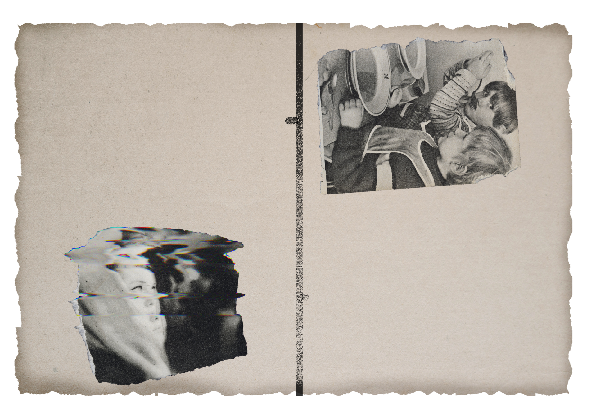
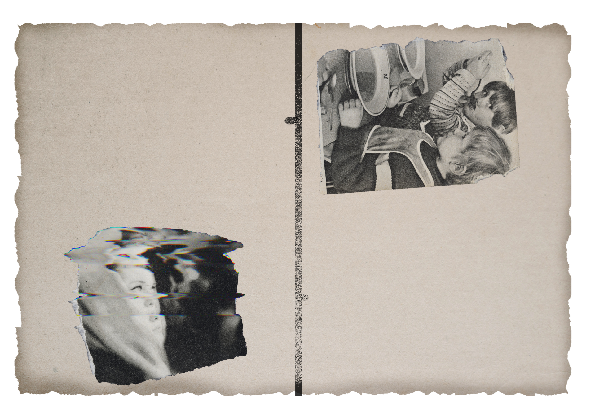

po
jego
myśli,
wpadał
w
panikę.
Jego
rodzice
i
nauczyciele
tłumaczyli
to
jako
„ambicję”
albo
„perfekcjonizm”,
coś,
co
w
przyszłości
miało
mu
pomóc.
Nikt
nie
zdawał
sobie
sprawy,
że
ta
potrzeba
kontroli
była
jedynie
maską
dla
jego
głębszych
problemów
emocjonalnych.
Po
ukończeniu
szkoły
średniej
——
dostał
się
na
wymarzone
studia
na
uniwersytecie.
Był
wzorowym
studentem,
zawsze
przygotowanym,
zawsze
gotowym
na
kolejne
wyzwania.
Ale
wtedy
zaczęły
się
pierwsze
problemy.
Pierwsze
objawy
jego
stanu
były
subtelne:
drobne
niepowodzenia
wywoływały
w
nim
ogromny
stres.
Jeśli
coś
nie
szło
zgodnie
z
planem,
——
wpadał
w
stan
głębokiego
niepokoju.
Pierwsza
negatywna
ocena
na
egzaminie
niemalże
doprowadziła
go
do
załamania
nerwowego.
Potrafił
nie
spać
przez
kilka
nocy,
obsesyjnie
analizując
każdy
błąd,
każdą
minutę
spędzoną
na
nauce, by zrozumieć, gdzie zawiódł. Z każdym kolejnym rokiem
jego potrzeba kontroli rosła. Wszystko
musiało być doskonałe – nie tylko jego
wyniki na studiach, ale także wygląd,
relacje z innymi, finanse. Był przekona
-
ny, że tylko poprzez absolutną kontrolę
nad sobą i otoczeniem będzie w stanie
osiągnąć sukces. To właśnie wtedy w jego
życiu pojawiła się ——, kobieta, którą
później poślubił. Była jego przeciwień
-
stwem – spontaniczna, radosna, pełna
życia. Początkowo wydawało się, że jej
energia może mu pomóc się rozluźnić,
znaleźć równowagę. Ona sama opisywała go
jako „kamień”, którytrzyma ją na ziemi,
gdy ona buja w obłokach. Z czasem
jednak, ich relacja zaczęła
siękomplikować. —— nie mógznieść jej
spontaniczności. Każdy plan, który ona
zmieniała w ostatniej
chwili, każde drobne
odstępstwo od tego, co
zaplanował,
wywoływało w
nimfrustrację.
Zaczynał ją
kontrolować, zmuszać do
przestrzegania jego
reguł. Ona, początkowo
wyrozumiała, zaczęła
czuć się osaczona, a
ich małżeństwo, które
miało być pełne
miłości, przerodziło
się w ciągłe
starcie dwóch skrajnych osobowości. Najbardziej tra
-
giczna była jednak historia ich dziecka. Kiedy ich córka
przyszła na świat,
—— wydawał się początkowo niebowzięty. Córka była dla
niego nowym projektem, czymś, co musiał „zrobić dobrze”.
Ale jak każdy rodzic wie, dzieci są nieprzewidywalne.
Córka —— była energiczna, pełna życia, zupełnie jak jej
matka. —— nie potrafił poradzić sobie z jej naturalnym
chaosem, jej niechęcią do przestrzegania jego zasad.
Zaczynał ją kontrolować, narzucać jej swoją wolę,
ograniczać swobodę. Kiedy miała pięć lat, doszło do
pierwszej poważnej kłótni między nim a jego żoną. Ona oskarżyła go o to, że
tłamsi ich córkę, że nie pozwala jej być sobą.
Jego reakcja była gwałtowna – wyrzucił ją z domu na kilka dni, próbując
udowodnić, że to on ma rację. To był moment, w którym jego obsesyjna potrzeba
kontroli osiągnęła kulminację. Zamiast zastanowić się nad swoimi zachowaniami,
—— postanowił, że jedynym sposobem na „uratowanie” rodziny jest całkowite
podporządkowanie ich swojemu porządkowi. Zaczął inwigilować swoją żonę
sprawdzał jej telefon, kontrolował, z kim się spotyka. Kiedy przestała się
zgadzać na jego reguły, zaczął ją szantażować emocjonalnie, manipulować
dzieckiem, żeby miała poczucie winy. I wtedy stało się coś, co zmieniło
wszystko. Pewnego dnia żona —— oznajmiła, że chce rozwodu. Dla niego był to
cios, jakiego nie mógł przewidzieć ani zaakceptować. Jego perfekcyjny świat
miał się zawalić, a on nie mógł na to pozwolić. Następnego dnia wrócił do domu
wcześniej z pracy i zastał swoją żonę pakującą rzeczy córki.
Bez słowa podszedł do niej, chwycił nóż, który leżał
na stole, i ugodził ją kilkanaście razy. Córka, która
była świadkiem tego wszystkiego, stała osłupiała w
kącie pokoju.
To jej krzyk obudził go z amoku. —— natychmiast zadzwonił na policję i przyznał się
do wszystkiego. Został aresztowany, a córka trafiła pod opiekę babci. Podczas proce
-
su jeg adwokat argumentował, że —— cierpi na poważne zaburzenia osobowości związa
-
ne z obsesyjną potrzebą kontroli. Psychologowie, którzy go badali, potwierdzili, że
jego życie było pełne niewielkich, ale kluczowych decyzji, które doprowadziły go do
tej tragedii. Podczas
naszych rozmów —— wielokrotnie powtarzał, że nie mógł znieść tego, że jego świat
rozpada się na jego oczach. Nie rozumiał, jak coś, co tak starannie planował i kon
-
trolował, mogło zakończyć się taką katastrofą. To nie była gwałtowność ani nagły im
-

. Zacznijmy od początku.
—— urodził się i wychował
w rodzinie robotniczej.
Ojciec pracował fizycznie,
matka była nauczycielką w lok
alnej szkole. Rodzina wydawała
się solidna, stabilna, może nie
bogata, ale na pewno pełna
miłości i wsparcia.
Wszyscy sąsiedzi powtarzali,
że —— miał dobre dzieciństwo.
Był jednym z tych chłopców, o
których mówiło się, że „zawsze
coś z niego będzie”.
Dobrze się uczył, miał plany,
ambicje, a rodzice wspierali jego
marzenia o studiach. Jednak już
wtedy można było dostrzec coś,
co odróżniało go od innych.
—— miał obsesyjną potrzebę kontroli.
Wydawało się to niewinne -– zawsze
musiał mieć wszystko pod kontrolą,
od planu dnia, przez swoje oceny,
po to, co zjedzą na kolację.
Każdy drobiazg musiał być
zaplanowany,
a
jeśli
coś
szło
nie
Dobrze się uczył, miał plany,
ambicje, a rodzice wspierali jego
marzenia o studiach. Jednak już
wtedy można było dostrzec coś,
co odróżniało go od innych.
—— miał obsesyjną potrzebę kontroli.
Wydawało się to niewinne -– zawsze
musiał mieć wszystko pod kontrolą,
od planu dnia, przez swoje oceny,
po to, co zjedzą na kolację.
Każdy drobiazg musiał być
zaplanowany,
a
jeśli
coś
szło
nie
. Zacznijmy od początku.
—— urodził się i wychował
w rodzinie robotniczej.
Ojciec pracował fizycznie,
matka była nauczycielką w lok
alnej szkole. Rodzina wydawała
się solidna, stabilna, może nie
bogata, ale na pewno pełna
miłości i wsparcia.
Wszyscy sąsiedzi powtarzali,
że —— miał dobre dzieciństwo.
Był jednym z tych chłopców, o
których mówiło się, że „zawsze
coś z niego będzie”.